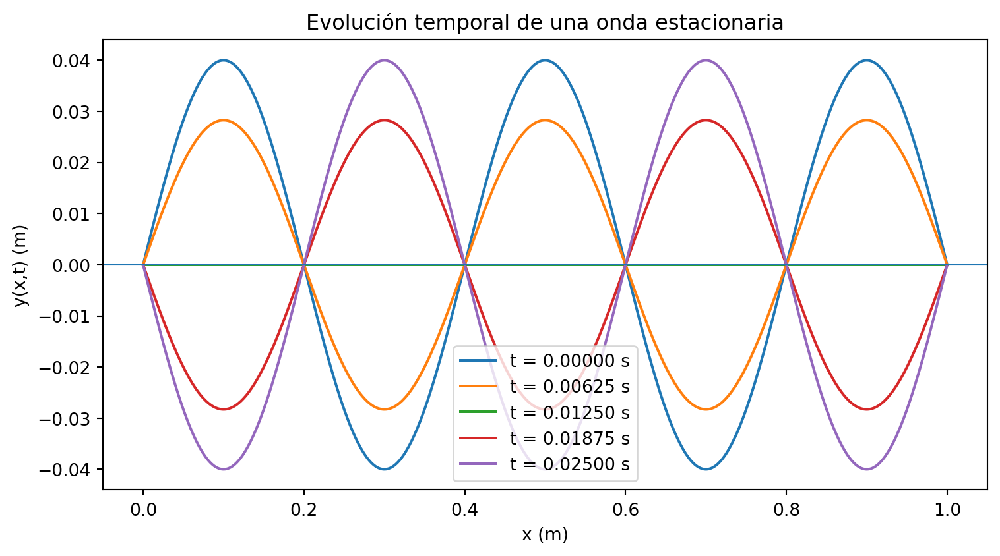

Ejercicios típicos de examen parcial y su interpretación física
Autor/a
Diego Villalba
Fecha de publicación
28 de abril de 2026
Introducción
El estudio de las ondas mecánicas permite conectar una descripción física intuitiva —la propagación de una perturbación en un medio— con una formulación matemática precisa basada en ecuaciones diferenciales parciales. En una cuerda, en el sonido o en una perturbación radial en un medio tridimensional, la información no se transporta mediante el desplazamiento neto de materia a grandes distancias, sino mediante la transmisión local de energía y momento a través del medio.
Este capítulo desarrolla los conceptos centrales asociados con la ecuación de onda, las ondas viajeras, las ondas esféricas y las ondas estacionarias. El punto de partida son ejercicios típicos de un examen parcial sobre ondas, donde se pide verificar soluciones, identificar rapidez de propagación, localizar nodos y antinodos, y analizar la superposición de ondas que viajan en sentidos opuestos. A partir de esas ideas, construiremos una exposición más completa, con definiciones formales, interpretación física y ejemplos computacionales en Python.
El objetivo no es únicamente resolver expresiones particulares, sino mostrar cómo se reconocen patrones generales. Una función de la forma \(f(x-vt)\) describe una perturbación que se desplaza hacia la derecha con rapidez \(v\), mientras que una función \(f(x+vt)\) describe una perturbación que se desplaza hacia la izquierda. Cuando dos ondas de igual frecuencia, amplitud y longitud de onda viajan en sentidos opuestos, su interferencia produce una onda estacionaria, caracterizada por nodos fijos y antinodos de máxima oscilación (feynman1964?; kleppner2014?).
La ecuación de onda unidimensional
La ecuación de onda unidimensional modela la evolución de una perturbación transversal \(y(x,t)\) que se propaga a lo largo de una dirección espacial \(x\). En una cuerda ideal bajo tensión constante, esta ecuación puede deducirse aplicando la segunda ley de Newton a un elemento diferencial de cuerda y suponiendo pequeñas pendientes, de modo que la tensión actúa aproximadamente con magnitud constante (marion2013?; french1971?).
Definición. La ecuación de onda unidimensional para una perturbación \(y(x,t)\) con rapidez de propagación \(v\) es \[
\frac{\partial^2 y}{\partial t^2}=v^2\frac{\partial^2 y}{\partial x^2}.
\tag{3.1}\]
Una característica fundamental de esta ecuación es que admite soluciones viajeras de forma arbitraria. Si \(f\) es una función suficientemente diferenciable, entonces \[
y(x,t)=f(x-vt)
\] es una onda que se desplaza hacia valores crecientes de \(x\), mientras que \[
y(x,t)=g(x+vt)
\] es una onda que se desplaza hacia valores decrecientes de \(x\). La solución general en una dimensión puede escribirse como la suma de ambas contribuciones: \[
y(x,t)=f(x-vt)+g(x+vt),
\] resultado conocido como solución de d’Alembert (courant1962?).
Verificación directa
Para verificar que \(y(x,t)=f(x-vt)\) satisface la ecuación de onda, definimos \(u=x-vt\). Por regla de la cadena, \[
\frac{\partial y}{\partial t}=-v f'(u), \qquad
\frac{\partial^2 y}{\partial t^2}=v^2 f''(u),
\] y \[
\frac{\partial y}{\partial x}=f'(u), \qquad
\frac{\partial^2 y}{\partial x^2}=f''(u).
\] Por tanto, \[
\frac{\partial^2 y}{\partial t^2}=v^2 f''(u)=v^2\frac{\partial^2 y}{\partial x^2}.
\] El mismo argumento aplica para \(g(x+vt)\).
Ondas esféricas
En tres dimensiones, una onda que se propaga radialmente desde una fuente puntual no conserva amplitud constante. A medida que el frente de onda se expande, la energía se distribuye sobre superficies esféricas de área \(4\pi r^2\). Por ello, la amplitud de una onda esférica ideal suele decaer como \(1/r\) en ausencia de absorción.
En problemas con simetría radial, la ecuación de onda tridimensional puede reducirse a una ecuación efectiva para la cantidad \(r\xi(r,t)\). Esto permite estudiar la propagación radial usando una ecuación formalmente similar a la ecuación de onda unidimensional.
Definición. Una onda esférica radial \(\xi(r,t)\) satisface la ecuación reducida \[
\frac{\partial^2}{\partial t^2}\bigl(r\xi\bigr)=v^2\frac{\partial^2}{\partial r^2}\bigl(r\xi\bigr).
\tag{3.2}\]
Si se propone \[
\xi(r,t)=\frac{1}{r}f(r+vt),
\] entonces \[
r\xi(r,t)=f(r+vt).
\] Definiendo \(u=r+vt\), se tiene \[
\frac{\partial}{\partial t}(r\xi)=v f'(u), \qquad
\frac{\partial^2}{\partial t^2}(r\xi)=v^2 f''(u),
\] y \[
\frac{\partial}{\partial r}(r\xi)=f'(u), \qquad
\frac{\partial^2}{\partial r^2}(r\xi)=f''(u).
\] Por lo tanto, \[
\frac{\partial^2}{\partial t^2}(r\xi)=v^2 f''(u)=v^2\frac{\partial^2}{\partial r^2}(r\xi),
\] lo cual verifica que \(\xi=(1/r)f(r+vt)\) es solución de la ecuación radial.
La presencia de \(r+vt\) indica que la forma de onda se desplaza hacia valores decrecientes de \(r\), es decir, corresponde a una onda esférica convergente. En cambio, una dependencia \(f(r-vt)/r\) representaría una onda esférica saliente.
Identificación de rapidez de propagación
Una onda sinusoidal viajera suele escribirse como \[
y(x,t)=A\sin(kx-\omega t+\phi),
\] donde \(A\) es la amplitud, \(k\) el número de onda, \(\omega\) la frecuencia angular y \(\phi\) una fase inicial. La rapidez de fase se obtiene imponiendo que la fase permanezca constante: \[
kx-\omega t+\phi=\text{constante}.
\] Al derivar respecto al tiempo, \[
k\frac{dx}{dt}-\omega=0,
\] por lo que \[
v=\frac{dx}{dt}=\frac{\omega}{k}.
\]
Definición. Para una onda armónica de fase \(kx-\omega t+\phi\), la rapidez de fase es \[
v=\frac{\omega}{k}=\lambda f,
\tag{3.3}\]
donde \(\lambda=2\pi/k\) es la longitud de onda y \(f=\omega/(2\pi)\) es la frecuencia ordinaria.
Ejemplo: rapidez a partir de una expresión de onda
Considérese una onda del tipo \[
y(x,t)=A\sin(kx-\omega t),
\] con \[
A=2.00\,\text{mm}, \qquad k=20\,\text{m}^{-1}, \qquad \omega=4.0\,\text{s}^{-1}.
\] La rapidez de propagación es \[
v=\frac{\omega}{k}=\frac{4.0\,\text{s}^{-1}}{20\,\text{m}^{-1}}=0.20\,\text{m/s}.
\] La amplitud no afecta la rapidez; únicamente determina el desplazamiento máximo respecto a la posición de equilibrio.
import numpy as npk =20.0# 1/momega =4.0# 1/sv = omega / klambda_ =2*np.pi / kfrequency = omega / (2*np.pi)print(f"Rapidez de fase: {v:.3f} m/s")print(f"Longitud de onda: {lambda_:.3f} m")print(f"Frecuencia: {frequency:.3f} Hz")
Rapidez de fase: 0.200 m/s
Longitud de onda: 0.314 m
Frecuencia: 0.637 Hz
Superposición y ondas estacionarias
La ecuación de onda es lineal. Esto significa que si \(y_1(x,t)\) y \(y_2(x,t)\) son soluciones, entonces cualquier combinación lineal \[
y(x,t)=c_1y_1(x,t)+c_2y_2(x,t)
\] también es solución. Esta propiedad permite explicar la interferencia, las ondas estacionarias y los modos normales de vibración (french1971?; feynman1964?).
Una onda estacionaria aparece cuando dos ondas armónicas de la misma amplitud, frecuencia y número de onda viajan en sentidos opuestos. Por ejemplo, \[
y_1(x,t)=A\sin(kx-\omega t), \qquad
y_2(x,t)=A\sin(kx+\omega t).
\] Usando la identidad trigonométrica \[
\sin(a-b)+\sin(a+b)=2\sin(a)\cos(b),
\] se obtiene \[
y(x,t)=y_1+y_2=2A\sin(kx)\cos(\omega t).
\]
Definición. Una onda estacionaria unidimensional puede escribirse como \[
y(x,t)=A_s\sin(kx)\cos(\omega t),
\tag{3.4}\]
donde \(A_s\) es la amplitud máxima espacial de la onda estacionaria. Los puntos donde \(\sin(kx)=0\) son nodos, y los puntos donde \(|\sin(kx)|=1\) son antinodos.
Nodos y antinodos
Los nodos son puntos que permanecen en reposo para todo tiempo. En la forma \[
y(x,t)=A_s\sin(kx)\cos(\omega t),
\] los nodos satisfacen \[
\sin(kx)=0.
\] Por tanto, \[
kx=n\pi, \qquad n=0,1,2,\dots
\] y \[
x_n=\frac{n\pi}{k}.
\]
Los antinodos satisfacen \[
|\sin(kx)|=1,
\] es decir, \[
kx=\frac{(2n+1)\pi}{2}, \qquad n=0,1,2,\dots
\] y \[
x_n^{(a)}=\frac{(2n+1)\pi}{2k}.
\]
Ejemplo práctico: análisis de una onda estacionaria
Consideremos el patrón \[
y(x,t)=0.040\sin(5\pi x)\cos(40\pi t),
\] con \(x\) y \(y\) en metros y \(t\) en segundos.
Comparando con la forma estándar \[
y(x,t)=A_s\sin(kx)\cos(\omega t),
\] identificamos \[
A_s=0.040\,\text{m}, \qquad k=5\pi\,\text{m}^{-1}, \qquad \omega=40\pi\,\text{s}^{-1}.
\]
Posición de los nodos
Los nodos satisfacen \[
5\pi x=n\pi.
\] Por tanto, \[
x_n=\frac{n}{5}\,\text{m}.
\] Para \(x\geq 0\), las primeras posiciones son \[
x_0=0, \qquad x_1=0.20\,\text{m}, \qquad x_2=0.40\,\text{m}.
\] Si se excluye el nodo en el extremo \(x=0\) por considerarlo frontera, entonces los tres primeros nodos positivos serían \(0.20\,\text{m}\), \(0.40\,\text{m}\) y \(0.60\,\text{m}\).
Período temporal
La frecuencia angular es \(\omega=40\pi\,\text{s}^{-1}\), de modo que \[
T=\frac{2\pi}{\omega}=\frac{2\pi}{40\pi}=0.050\,\text{s}.
\] Todo punto que no sea nodo oscila con este período.
Rapidez de las ondas viajeras componentes
La rapidez de las dos ondas viajeras que interfieren para producir la onda estacionaria es \[
v=\frac{\omega}{k}=\frac{40\pi}{5\pi}=8.0\,\text{m/s}.
\]
Amplitud de las ondas viajeras
La onda estacionaria tiene amplitud espacial máxima \(A_s=2A\), donde \(A\) es la amplitud de cada onda viajera componente. Por tanto, \[
A=\frac{A_s}{2}=\frac{0.040}{2}=0.020\,\text{m}.
\] Cada onda viajera tiene amplitud \(2.0\,\text{cm}\).
Instantes de velocidad transversal nula
La velocidad transversal es \[
v_y(x,t)=\frac{\partial y}{\partial t}
=-0.040(40\pi)\sin(5\pi x)\sin(40\pi t).
\] Todos los puntos de la cuerda tienen velocidad transversal nula cuando \[
\sin(40\pi t)=0.
\] Así, \[
40\pi t=m\pi, \qquad m=0,1,2,\dots
\] y \[
t_m=\frac{m}{40}\,\text{s}.
\] Para \(t\geq 0\), los primeros instantes son \[
t_0=0, \qquad t_1=0.025\,\text{s}, \qquad t_2=0.050\,\text{s}.
\] Si se busca el primer instante positivo, sería \(0.025\,\text{s}\).
import numpy as npA_s =0.040k =5*np.piomega =40*np.pinodes = [n*np.pi/k for n inrange(4)]T =2*np.pi/omegav = omega/kA_traveling = A_s/2t_zero_velocity = [m*np.pi/omega for m inrange(4)]print("Nodos (m):", [round(x, 3) for x in nodes])print(f"Periodo: {T:.3f} s")print(f"Rapidez: {v:.3f} m/s")print(f"Amplitud de cada onda viajera: {A_traveling:.3f} m")print("Instantes con velocidad transversal nula (s):", [round(t, 3) for t in t_zero_velocity])
Nodos (m): [0.0, 0.2, 0.4, 0.6]
Periodo: 0.050 s
Rapidez: 8.000 m/s
Amplitud de cada onda viajera: 0.020 m
Instantes con velocidad transversal nula (s): [0.0, 0.025, 0.05, 0.075]
Visualización con Python
La visualización ayuda a distinguir una onda viajera de una onda estacionaria. En una onda viajera, el perfil completo se desplaza. En una onda estacionaria, los nodos permanecen fijos y cada punto oscila con una amplitud que depende de su posición.
import numpy as npimport matplotlib.pyplot as pltA_s =0.040k =5*np.piomega =40*np.pix = np.linspace(0, 1.0, 600)times = [0.0, 0.00625, 0.0125, 0.01875, 0.025]plt.figure(figsize=(8, 4.5))for t in times: y = A_s*np.sin(k*x)*np.cos(omega*t) plt.plot(x, y, label=f"t = {t:.5f} s")plt.axhline(0, linewidth=0.8)plt.xlabel("x (m)")plt.ylabel("y(x,t) (m)")plt.title("Evolución temporal de una onda estacionaria")plt.legend()plt.tight_layout()plt.show()

Para localizar nodos de forma computacional, basta usar la fórmula analítica \(x_n=n\pi/k\). En un análisis numérico con datos discretos, también puede estimarse la posición de nodos buscando puntos donde la amplitud temporal sea cercana a cero.
import numpy as npk =5*np.piL =1.0n_max =int(np.floor(k*L/np.pi))nodes = np.array([n*np.pi/k for n inrange(n_max +1)])print(nodes)
[0. 0.2 0.4 0.6 0.8 1. ]
Ejemplo práctico: distancia recorrida por las ondas componentes
Ahora consideremos dos ondas que viajan en sentidos opuestos: \[
y_1(x,t)=(6.00\,\text{mm})\sin(4.00\pi x-400\pi t),
\]\[
y_2(x,t)=(6.00\,\text{mm})\sin(4.00\pi x+400\pi t).
\] Su superposición es \[
y(x,t)=y_1+y_2=2(6.00\,\text{mm})\sin(4.00\pi x)\cos(400\pi t).
\] Por tanto, el patrón estacionario tiene amplitud máxima \[
A_s=12.00\,\text{mm}.
\]
Aquí \[
k=4\pi\,\text{m}^{-1}, \qquad \omega=400\pi\,\text{s}^{-1}.
\] La rapidez de cada onda viajera es \[
v=\frac{\omega}{k}=\frac{400\pi}{4\pi}=100\,\text{m/s}.
\]
Un antinodo pasa de desplazamiento máximo hacia arriba a desplazamiento máximo hacia abajo en medio período. El período de oscilación es \[
T=\frac{2\pi}{\omega}=\frac{2\pi}{400\pi}=0.005\,\text{s}.
\] Entonces el intervalo requerido es \[
\Delta t=\frac{T}{2}=0.0025\,\text{s}.
\] Durante ese tiempo, cada onda viajera recorre una distancia \[
\Delta x=v\Delta t=(100\,\text{m/s})(0.0025\,\text{s})=0.25\,\text{m}.
\]
Este resultado también puede obtenerse usando la longitud de onda. Como \[
\lambda=\frac{2\pi}{k}=\frac{2\pi}{4\pi}=0.50\,\text{m},
\] medio período corresponde a media longitud de onda recorrida: \[
\Delta x=\frac{\lambda}{2}=0.25\,\text{m}.
\]
import numpy as npA =6.00e-3k =4*np.piomega =400*np.piv = omega/kT =2*np.pi/omegadt = T/2distance = v*dtlambda_ =2*np.pi/kprint(f"Rapidez: {v:.1f} m/s")print(f"Periodo: {T:.4f} s")print(f"Intervalo de máximo superior a máximo inferior: {dt:.4f} s")print(f"Distancia recorrida: {distance:.3f} m")print(f"Longitud de onda: {lambda_:.3f} m")
Rapidez: 100.0 m/s
Periodo: 0.0050 s
Intervalo de máximo superior a máximo inferior: 0.0025 s
Distancia recorrida: 0.250 m
Longitud de onda: 0.500 m
Interpretación física de los nodos y la energía
Aunque una onda estacionaria parece no propagarse globalmente, puede entenderse como la interferencia de dos ondas viajeras que transportan energía en direcciones opuestas. En un patrón ideal con amplitudes iguales, el flujo neto promedio de energía puede anularse, pero localmente la energía se transforma entre energía cinética y energía potencial elástica.
En los nodos, el desplazamiento transversal es siempre cero; sin embargo, la cuerda no necesariamente carece de energía cerca de ellos, pues la pendiente espacial puede ser máxima. En los antinodos ocurre lo contrario: la amplitud de desplazamiento es máxima, y el punto alterna entre máxima elongación y paso por el equilibrio con máxima rapidez transversal.
Esta distinción es importante en sistemas físicos más generales. Los modos normales de una cuerda, una columna de aire o una cavidad electromagnética se describen mediante patrones estacionarios determinados por condiciones de frontera. La cuantización de modos en sistemas vibrantes y en campos físicos surge precisamente de imponer que sólo ciertas longitudes de onda sean compatibles con la geometría del sistema (feynman1964?; kleppner2014?).
Resumen de fórmulas útiles
Para una onda viajera armónica \[
y(x,t)=A\sin(kx-\omega t+\phi),
\] las cantidades principales son \[
\lambda=\frac{2\pi}{k}, \qquad f=\frac{\omega}{2\pi}, \qquad T=\frac{2\pi}{\omega}, \qquad v=\frac{\omega}{k}=\lambda f.
\]
Para una onda estacionaria \[
y(x,t)=A_s\sin(kx)\cos(\omega t),
\] los nodos y antinodos se ubican en \[
x_n=\frac{n\pi}{k}, \qquad x_n^{(a)}=\frac{(2n+1)\pi}{2k}.
\] Si la onda estacionaria resulta de la superposición de dos ondas viajeras idénticas de amplitud \(A\), entonces \[
A_s=2A.
\]
Conclusiones
La ecuación de onda proporciona un marco matemático unificado para describir perturbaciones que se propagan en medios físicos. A partir de ella se reconocen soluciones viajeras, ondas radiales esféricas y patrones estacionarios. La forma funcional de la onda permite identificar de manera directa la rapidez de propagación, la frecuencia, la longitud de onda y el período.
Las ondas estacionarias muestran cómo la superposición de ondas viajeras puede producir estructuras espaciales fijas. Los nodos y antinodos no son propiedades de una sola onda viajera, sino del patrón de interferencia. Esta idea es esencial para entender modos normales, resonancia, condiciones de frontera y fenómenos ondulatorios en sistemas mecánicos, acústicos y electromagnéticos.
El tratamiento computacional en Python complementa el análisis analítico: permite visualizar la evolución temporal, verificar fórmulas y explorar cómo cambian los patrones al modificar \(k\), \(\omega\) o la amplitud. En un curso técnico, esta combinación entre deducción matemática, interpretación física y experimentación numérica favorece una comprensión más profunda del fenómeno ondulatorio.